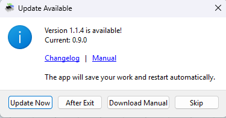
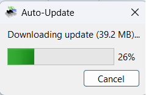
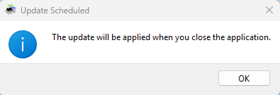

Setting up MidiEditor
Midi I/O
MidiEditor has to be correctly configured in order to be able to send data to a Midi device which is connected to the computer and (if required) to receive any data in order to allow recording. If not correctly configured, MidiEditor can be used to edit Midi files; however, you won't be able to listen to the music. MidiEditor AI includes a built-in FluidSynth SoundFont player — if you don't have an external MIDI device, the SoundFont output works out of the box.

To select the input or output device click "Settings.." in the MIDI menu in the menubar. In the list on the left-hand side of the upcoming dialog, please select the card "Midi I/O". This will show two lists which show all available input/output devices.
Select in-/and output from the lists and click "Close".
On startup, MidiEditor will always try to connect to the devices which have been used during the last session.
Making the Input Device audible
A lot of Midi devices which allow you to input Midi data are not audible but need a connected computer to generate sounds (similar to MidiEditor). When having chosen a valid output device, you can pass all notes played at the input device to the output device which makes the played notes audible. Select the option "Connect Midi In/Out" in the MIDI menu in the menubar or in the toolbar.
Starting Synthesizers along with MidiEditor
There are a lot of synthesizers MidiEditor can use to produce its sound with. However, some of those synthesizers have to be started each time you start MidiEditor, as they are not running by default.
To start a software each time when MidiEditor is started, you can set a start-command which is executed at each startup of the editor. To enter this command, click the menu entry "Settings..." in the MIDI menu in the menubar. Select the card "Additional Midi Settings" and enter your start command in the according field. The output of the started component will be visible (after the next startup) in the text area below this field.
Automatic Updates
MidiEditor AI checks for new versions on GitHub at each startup. When a newer version is available, you will see the Update Available dialog:

You have four options:
| Button | Action |
|---|---|
| Update Now | Downloads the update, saves your open file, replaces the application in-place, and restarts automatically. Your MIDI file will be reopened after restart. |
| After Exit | Downloads the update in the background. The update will be applied when you close the application. |
| Download Manual | Opens the GitHub release page in your browser for manual download. |
| Skip | Dismisses the notification. You will be reminded again at next startup. |
When you choose Update Now or After Exit, a progress dialog shows the download status:

If you chose After Exit, a confirmation message appears:

How it works: The updater renames the running EXE to .bak, extracts the new version from the downloaded ZIP, and launches the new EXE. Old .bak files are automatically cleaned up on the next startup. No external installer or batch file is needed.
To disable the automatic update check at startup, open the Settings dialog and deselect the update checkbox.
Make sure your firewall allows MidiEditor AI to connect to api.github.com.
Support for older Midi Devices
Some old Midi devices may not support the full Midi instruction set. Hence, these devices may not stop the currently played notes when you click the stop button. MidiEditor provides a solution for this, which can be activated in the "Additional Midi Settings" card in the settings dialog. In order to activate it, check the checkbox "Manually stop notes". This should not be used when your Midi device does stop the playback whenever requested.